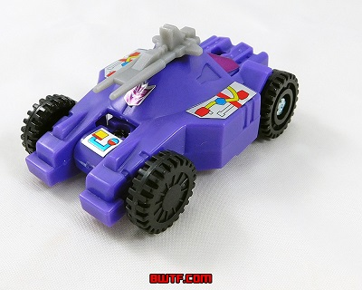
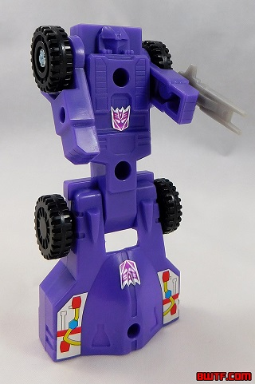
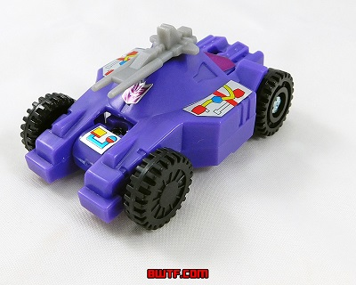
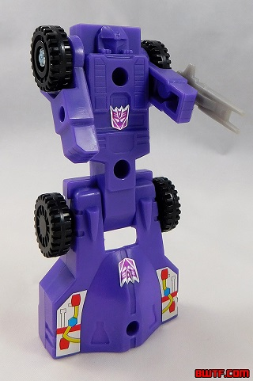
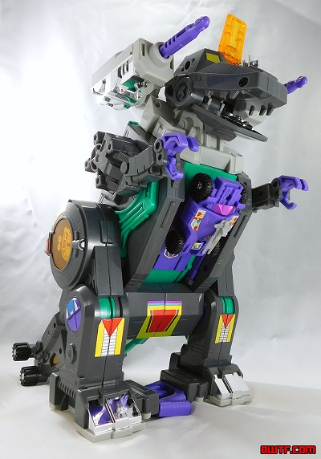
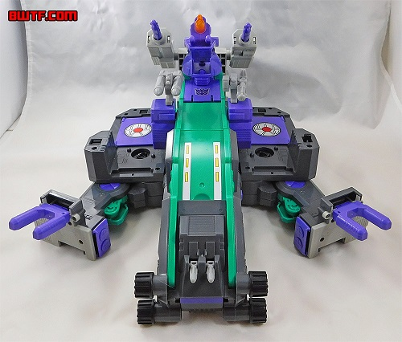
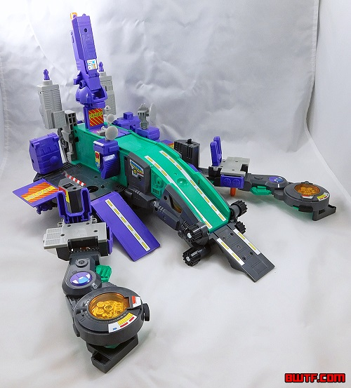
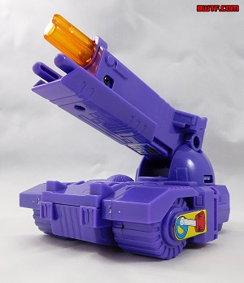

 
Difficulty of Transformation : Very Easy
Color Scheme : Purple, black, and some light milky gray
Individual Rating : 3.9
Allegiances
: Decepticon
Set Price
: ~$170 (U.S.)
 Full-Tilt
Full-Tilt


Difficulty of Transformation
: Very
Easy
Color Scheme
: Purple, black, and
some light milky gray
Individual Rating
: 3.9
Full-Tilt is Trypticon's
little Transformer buddy that sticks onto the center of his chest in Trypticon's
beast mode. Full-Tilt can come off and roll around by himself, being a
futuristic car that scales (more or less) with Trypticon. In vehicle mode,
Full-Tilt looks pretty decent, if very unrealistic-- he doesn't really
have a real-life counterpart in terms of vehicle mode, being anything more
specific than a four-wheeled car. He's got a two-part front bumper, with
some simplistic headlight details and then a pretty smooth windshield and
main body, with a few minor dents and details here and there. The back
end has a couple of simple engine block details, and his four wheels are
treaded. There's no robot mode extras whatsoever in this mode-- always
a plus, though as a car he perhaps should be a bit longer proportionally.
But hey, he works as a nice little vehicle to play around with on Trypticon's
alternate modes. His color scheme is very basic-- just purple plastic with
black wheels, and a small two-pronged gray gun that attached to the top
of his vehicle mode. There aren't any paint apps in this mode (or indeed,
on the entire toy), but there are a few stickers showing some basic mechanical
detailing on the sides and front of this mode. There's also a violet sticker
you can put on the back of the windshield (not pictured), but it's in an
odd place that really isn't all that visible in either mode.
Full-Tilt's transformation
basically just has you unfolding the windshield portion of the vehicle
mode out and forward and standing him up. Couldn't be simpler. Unfortunately,
the result is... pretty bad. I mean, from the waist up, he looks okay for
a G1 TF, with some simple vent detailing on the sides of his chest, basic
fist details on his too-short arms, and a decent rounded facesculpt with
a visor and a faceplate (even if it is just on the back of a block of plastic).
Unfortunately, these details could really use some paint, and again, there
isn't any. There's just a Decepticon symbol sticker for his waist as far
as new stickers. The legs are beyond poor, however, just being obviously
the front portion of his vehicle mode with basically no attempt to make
them even look like legs, other than that they connect to Full Tilt at
the hips. It's hard to see him walking with those oddly-shaped things,
and the length of them makes Full-Tilt too tall and slim to boot, making
him just unsightly and awkward in this mode. I do like that his gun can
at least attach to ports on the outside of his arms, though, and his articulation
in this mode at the shoulders allows him to swing his arms back-and-forth--
and they're ratcheted too, which is surprising for this small of a figure.
 Trypticon
Trypticon




Difficulty of Transformation to Fortress
:
Easy
Difficulty of Transformation to Base
:
Easy
Color Scheme
: Dark gray, purple,
seafoam green, and some black, light gray, chrome silver, and transparent
light orange
Individual Rating
: 7.4
Trypticon's "robot" mode
is more of a beast-- it's a robotic godzilla-like creature. In the show
Trypticon was depicted as being ridiculously enormous, more than the size
of an actual downtown city-- however, although his toy is certainly large,
it's not nearly as large as, say, his
Titans
Return update
. This version is maybe SLIGHTLY taller than the average
Leader-class toy, though certainly with considerably more bulk to him.
Proportionally, he's pretty good in this mode, with a wide, bulky body,
small arms (but not quite as small as that of a t-rex's), some crests on
his back similar to a Godzilla-esque kaiju, and large hips and feet. His
tail is truncated a bit, given that part of it folds out for a ramp in
another mode, but that's the only major proportional issue. As you'd expect
from a G1 toy, his molded-in details are fairly minimal overall, with some
basic details like the toes on his feet or the teeth in his mouth molded
in, as well as some gear-like details here and there. The only part that's
impressively detailed are the circular portions on his hips, which have
a lot of nicely-detailed gear-like bits behind transparent plastic. His
color scheme in this mode is mostly gray, but it's a play between the dark
gray of his main body and head versus the lighter gray of the dual cannons
on the sides of his head and his neck. There's plenty of other colors,
though, like the seafoam green on his chest and underside of his tail that
shows itself a bit in this mode. There's also some purple, mostly on his
chest (which is where he can store Full-Tilt), the ends of his hands, and
the bits on the interior of his feet. Some chrome silver is present on
his feet, the interior of his hips, and on the underside of his neck-cannons,
as well as some other minor gun parts. Finally, there's some transparent
light orange on small portions of his tail, the sides of his hips, and
his forehead. It all makes for a fairly unique yet Decepticon-y color scheme,
and I quite like it. Of course, I would like a decent amount of paint,
but this is a G1 toy-- instead Trypticon has a bunch of stickers instead.
Gold stickers on his eyes, and some basic mechanical detailing stickers
on his knees, crotch, and the sides of his lower legs and hips. There's
also a big Decepticon symbol sticker in the center of his chest. Trypticon's
main gimmick in this mode is awesome-- by flipping a switch, Trypticon
will (slowly) walk forward by himself! This can even work over carpet,
although he's a bit more uneven there. (The purple pieces on the insides
of his feet are to keep him on track.) As his legs move, the arms will
also move up and down since they're connected. It's simple, but it's loads
of fun, even if I wish he could move a LITTLE faster. Beyond this movement,
Trypticon can rotate at the neck, his lower claws and jaw can open, and
his side-mounted cannons can rotate around. As some hidden gimmicks, there's
some hidden guns inside his mouth, as well as inside his forehead if you
lift up the transparent orange part. Unfortunately, there's several pieces
which Trypticon can't hold in this mode-- he's got 2 large ramp pieces,
2 purple tower pieces, a large purple/orange gun piece, 2 gray radar dish
pieces and 2 dish stands, 2 purple tread pieces, 2 gray blasters, and 2
gray blaster stands. That's a LOT of stuff to leave just off on the side,
which has always been my annoyance with a lot of the G1 toys-- that often
their pieces don't fit in all of their modes. However, the tower, tread,
and large gun pieces can combine to form Brunt, a little drone for Trypticon
pictured on the far right. (There's also two little mechanical detail stickers
on the sides of the treads.) It's a nice little drone, though I wish all
of Trypticon's pieces could do something like this.
Trypticon's Fortress
mode is sort of halfway between his beast and base mode. It's not complicated;
just split the sides off on hinges, then lay him down on his back and rotate
his head around while rotating his neck cannons forward. Then flip down
the track pieces on his feet forward, and you're done. There's wheels on
the bottom so this thing can roll forward, but really it just looks like
a "halfway base" mode. There's a big central ramp that's seafoam green,
but the end has a flap in front of it that prevents it from being a full-fledged
ramp, with some small guns on this flap that can rotate up and down. The
sides of this mode are rather weak, being just way too obviously the sides
of Trypticon's beast mode; there's some nice platforms there, and some
large visible "gear" stickers, but nothing that impressive. You can attach
some extra pieces around the center ramp section, as well as Brunt's cannon
near the back end for some firepower. In this mode a few more molded-in
details become clear, like some pipes and vents near the front, and the
translucent orange pieces on the sides of the front look like creepy eyes.
The seafoam green on the ramp makes this mode look a bit lighter, but the
color scheme overall is stil pretty much the same. One fun extension of
Trypticon's "walking" gimmick is that if you turn him on in this mode,
the weapons connected on the sides of his ramp will rotate around! Man,
I miss fun electronic things like these on TFs.
To transform Trypticon
to his city mode, unhook the legs from the hips and fold them out to form
longer "side prongs" to the city, and extend the ramp. Then just rotate
the cannons so they're standing up like towers, and if you want, replace
the weapons with radar dishes and attach the rest of Trypticon's extra
pieces as seen above, adding some additional ramps down the sides. Functionally
this is the same as the fortress mode, but more spread out and with cannons
being towers, it looks a bit more city-ish. You can run Full-Tilt all the
way down the central runway now, and the same pieces that rotated the weapons
in fortress mode rotate the dishes in this mode. Beyond small extra little
platforms in the middle, I'm still not entirely sure what the elongated
side-leg pieces are supposed to represent in an actual city, but they do
give the toy impressive dimensions width and length-wise. With all those
extra bits attached in the center, the city mode definitely looks more
"populated" and finished, and there's several stickers visible in this
mode that are partially or fully obscured in Trypticon's other modes. There's
long silver stripes down the sides of his main ramp; single silver stripes
down the center of each of his side ramps; caution red/silver stripes in
the middle of each side platform; large red/gold "HELIPAD" stickers on
each side extended platform; a red/gold "DANGER" sticker on the underside
of Brunt's cannon near the back center; and a silver sticker with some
circuitry detailing a bit higher up on that "tower". All in all it's got
some definite playability, though I do wish Trypticon came with a few other
sidekicks to more fully populate this mode without having to bring in a
bunch of other G1 toys. Still, it's definitely a fairly cool-looking platform,
even though, like most other city TFs, I think calling it a "city" is a
bit of a stretch.
Overall, the Trypticon "Platinum Edition" reissue is a pretty solid toy, with a fun auto-walking/rotating gimmick, an incredibly solid beast mode, and a pretty nice base mode, if you have enough other small TFs to actually make much use of it. That said, the fortress mode is pretty meh, and Full-Tilt's robot mode is incredibly weak. He's also got a BUNCH of extra pieces that can't attach in his beast mode, though I do like that a few of them can come together to form a little drone. I find $170 U.S. a bit expensive for a toy of this size, however, and wish the price had been knocked down about 25-30% or so to make it more appropriate. That said, even though it's considerably smaller I find it a much better toy than the QC-ridden Titans Return version, so if you want a large Trypticon toy, here you go.
Reviews by Beastbot
(Pics from Bwtf.com )